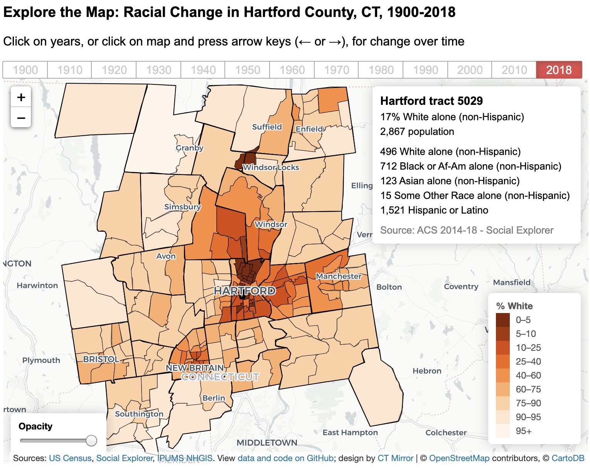
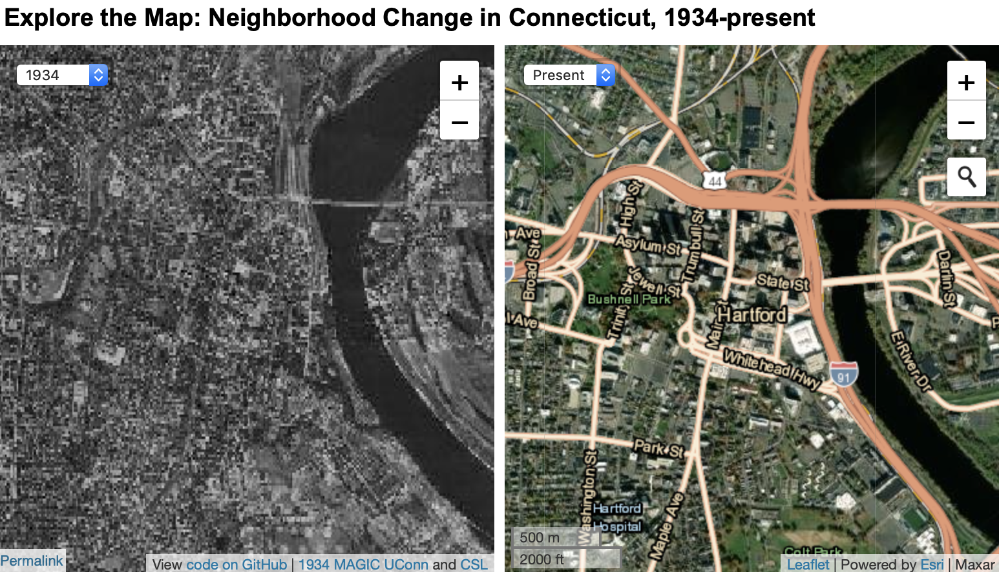
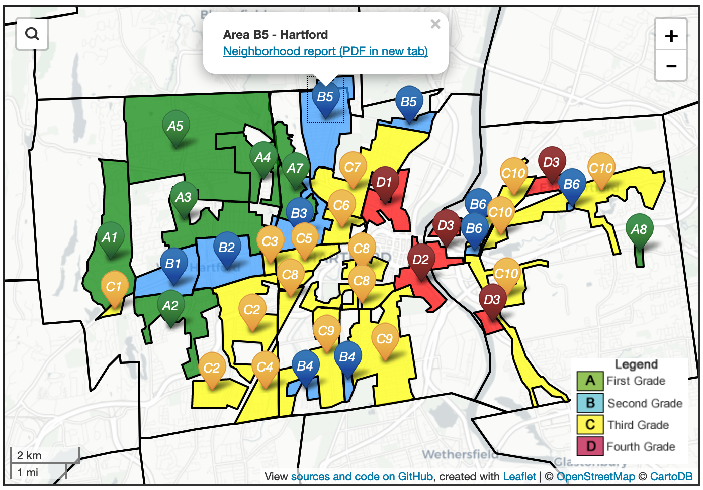
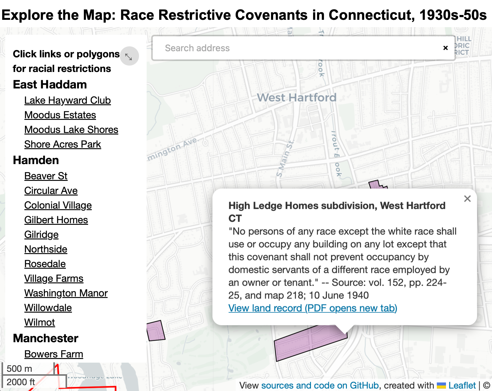

Maps and Charts by Year
by Jack Dougherty and Ilya Ilyankou
List of maps and charts created for On The Line, listed by earliest year of data. Click links to explore the full-size interactive versions on the web, access the source data and code, and read in context in this book.
| Screenshot | Description and Links |
|---|---|
 |
Map: Town Borders in Hartford County, CT, from 1600s to Present. Explore full-size interactive map at https://ontheline.github.io/otl-town-borders/index-caption.html, with code and source data at https://github.com/ontheline/otl-town-borders. Read in context in the Carving Up Town Boundaries chapter. |
|  | Map: Racial Change in Hartford County, CT, 1900-281. Explore full-size interactive map at https://ontheline.github.io/otl-racial-change/index-caption.html, with code and source data at https://github.com/ontheline/otl-racial-change. Read in context TODO. |
 |
Map: Home Value Index in Hartford County, CT, from 1910-2010. Explore full-size interactive map at https://ontheline.github.io/otl-home-value/index-caption.html, with code and source data at https://github.com/ontheline/otl-home-value. Read in context in the Richest City in the Nation chapter. |
|  | Map: Neighborhood Change in Connecticut, 1934-present. Explore full-size interactive map at https://ontheline.github.io/otl-neighborhood-change/index-caption.html, with code and source data at https://github.com/ontheline/otl-neighborhood-change. Read in context TODO |
|  | Map: Federal Home Owners’ Loan Corporation “Redlining” in Hartford area, 1937. Explore full-size interactive map at https://ontheline.github.io/otl-redlining/index-caption.html, with code and source data at https://github.com/ontheline/otl-redlining. Read in context in the Federal Lending and Redlining chapter. |
|  | Map: Racially Restrictive Covenants in Hartford area, 1940s. Explore full-size interactive map at https://ontheline.github.io/otl-covenants/index-caption.html, with code and source data at https://github.com/ontheline/otl-covenants. Read in context in the Restricting with Racial Covenants chapter. |
 |
Map: Compare US Elementary School Districts at the Same Scale, with Student Poverty, 2017. Explore full-size interactive map at https://ontheline.github.io/otl-compare-school-districts/index-caption.html, with code and source data at https://github.com/ontheline/otl-compare-school-districts. Read in context TODO |
 |
Map: Old Schoolhouses in Connecticut, Instagram photos by Johnna Kaplan. Explore full-size interactive map at https://ontheline.github.io/otl-oldschoolct/index-caption.html, with code and source data at https://github.com/ontheline/otl-oldschoolct. Read in context in the Challenges for Rural and Early Suburban Schools chapter. |
TODO: Add more maps and charts
 On The Line is an open-access, born-digital, book-in-progress by Jack Dougherty and contributors at Trinity College, Hartford CT, USA. This work is copyrighted by the authors and freely distributed under a Creative Commons Attribution-NonCommercial-ShareAlike 4.0 International License. Learn more about the book, including how to read and cite and our copyright with open-access policy and code repository. This book-in-progress was last updated on: 17 Aug 2020
On The Line is an open-access, born-digital, book-in-progress by Jack Dougherty and contributors at Trinity College, Hartford CT, USA. This work is copyrighted by the authors and freely distributed under a Creative Commons Attribution-NonCommercial-ShareAlike 4.0 International License. Learn more about the book, including how to read and cite and our copyright with open-access policy and code repository. This book-in-progress was last updated on: 17 Aug 2020